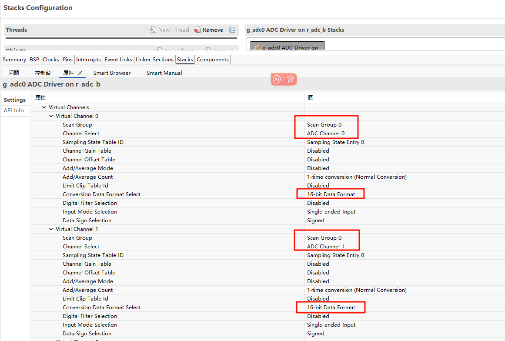
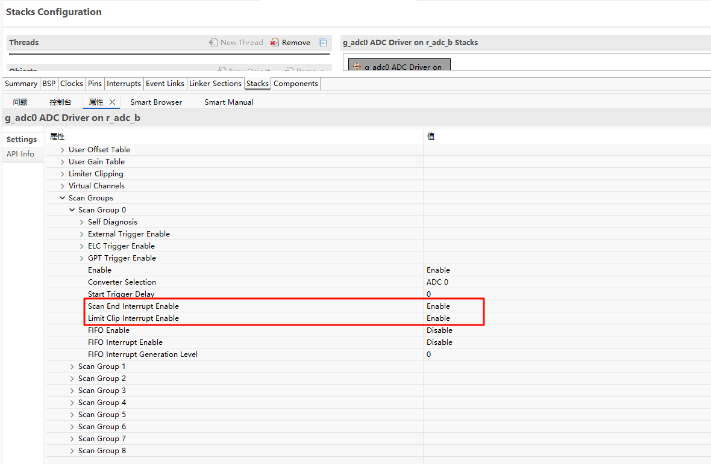
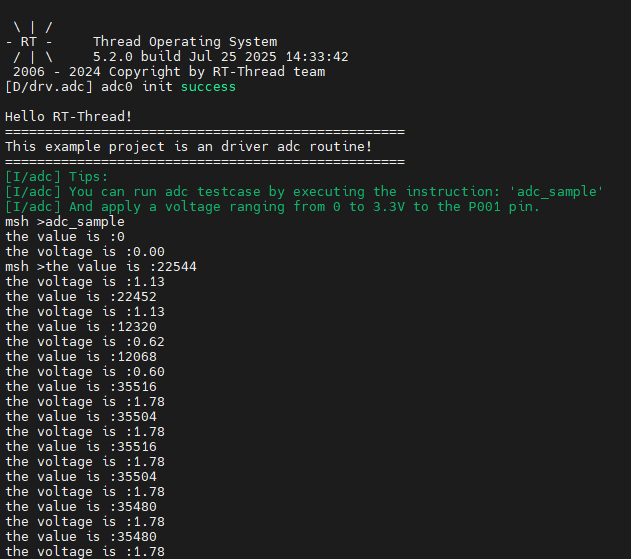

RA8P1 Titan Board ADC应用示例说明
中文 | English
简介
本例程主要介绍了如何在 Titan Board 上使用 RT-Thread 的 ADC 框架完成通过 ADC 采集模拟信号并进行数字信号的转换，主要内容如下：
硬件说明

如上述原理图所示：Titan Board 上留有 4 个 ADC 通道接口分别连接到单片机 adc0的通道0、1、2、3。
FSP配置说明
第一步：打开FSP导入xml配置文件；（或者直接点击 RT-Thread Studio 的 FSP 链接文件）；
第二步：新建 r_adc Stack 配置 adc 设备以及所用通道;



第三步：保存并点击 Generate Project；生成的代码保存到 hal_data.c 中；
env配置
使用 env 工具打开 adc0 的外设

工程实例说明
ADC 的源代码位于/projects/Titan_driver_adc/src/hal_entry.c 中，使用的宏定义如下所示：

具体功能为每隔 1000ms 对 ADC0 的通道 1 采集一次模拟电压并进行一次转化，代码如下：
static int adc_vol_sample()
{
rt_adc_device_t adc_dev;
rt_uint32_t value, vol;
rt_err_t ret = RT_EOK;
adc_dev = (rt_adc_device_t)rt_device_find(ADC_DEV_NAME);
if (adc_dev == RT_NULL)
{
rt_kprintf("adc sample run failed! can't find %s device!\n", ADC_DEV_NAME);
return RT_ERROR;
}
ret = rt_adc_enable(adc_dev, ADC_DEV_CHANNEL);
while(1)
{
value = rt_adc_read(adc_dev, ADC_DEV_CHANNEL);
rt_kprintf("the value is :%d \n", value);
vol = value * REFER_VOLTAGE / CONVERT_BITS;
rt_kprintf("the voltage is :%d.%02d \n", vol / 100, vol % 100);
rt_thread_mdelay(1000);
}
ret = rt_adc_disable(adc_dev, ADC_DEV_CHANNEL);
return ret;
}
示例中 While 循环每隔 1000ms 调用一次 adc_vol_sample;
编译&下载
RT-Thread Studio：在 RT-Thread Studio 的包管理器中下载 Titan Board 资源包，然后创建新工程，执行编译。
编译完成后，将开发板的 Jlink 接口与 PC 机连接，然后将固件下载至开发板。
运行效果
使用 adc0 的 1通道采集 1.8v 电压效果如下：
